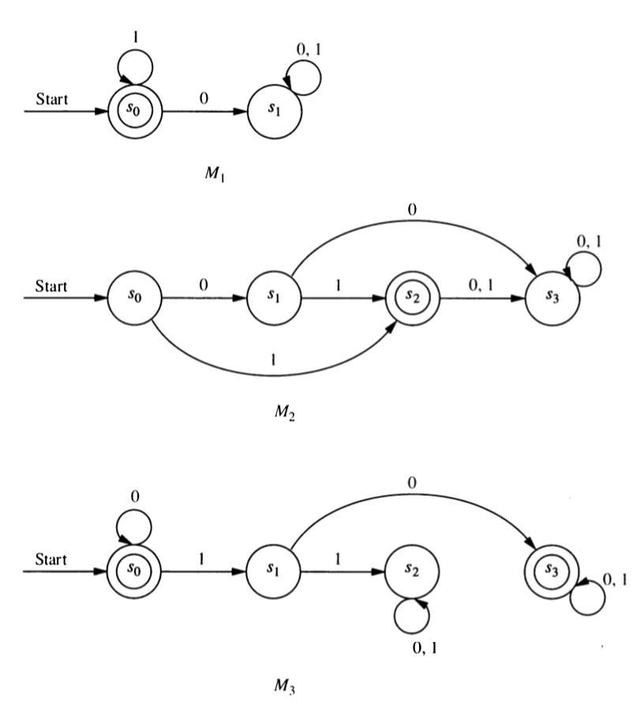
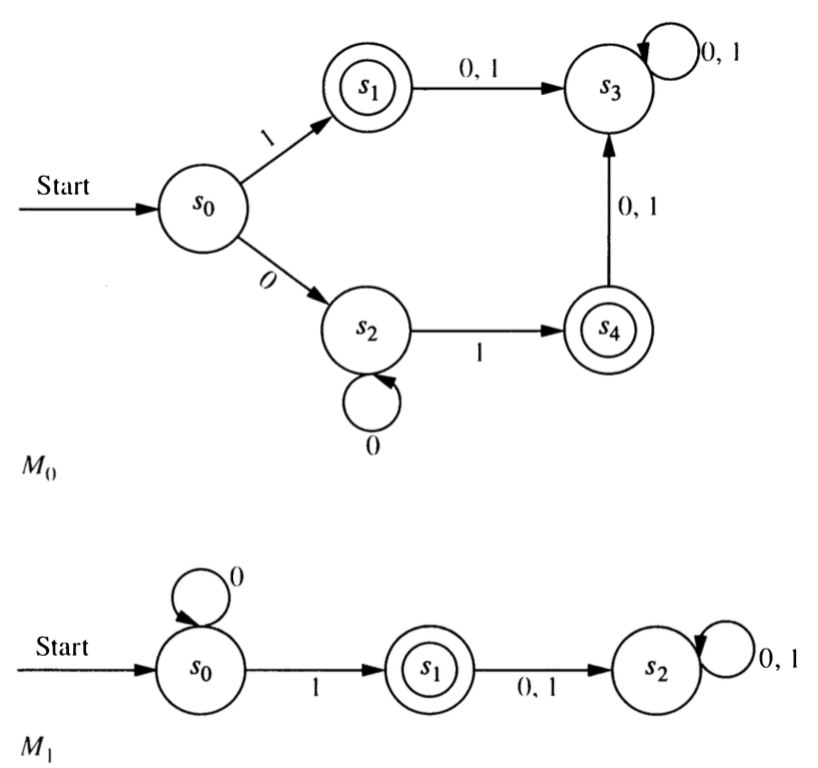
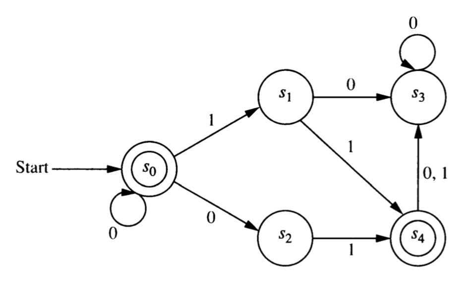

3 Finite State Automata
A finite state automaton consists of the following:
- a finite set of states: \(S\)
- a finite input alphabet: \(I\)
- a start state: \(s_0 \in S\).
- a set of final states: \(F \subseteq S\)
- a transition function: \(f : S \times I \to S\)
Example (\(M_0\)) states: \(\{A, B, C, D\}\); input alphabet: \(\{0, 1\}\); start state: \(A\); final states: \(\{A, D\}\); transition function described in table below
| \(M_0\) | ||||||||
|---|---|---|---|---|---|---|---|---|
| state | A | A | B | B | C | C | D | D |
| letter | 0 | 1 | 0 | 1 | 0 | 1 | 0 | 1 |
| \(f\) | A | B | A | C | A | A | C | B |
3.1 Graph Representation
It is often easier to visualize what is going on if we represent an automaton with a graph. Create a labeled, directed graph with the following properties:
- There is a vertex for each state, labeled with the state. (Draw this as a circle with the state inside the circle.
- There is an edge from state \(s\) to state \(t\) labeled with letter \(x\) if and only if \(f(s, x) = t\)
- Final states are circled a second time. (We could use shape or color or something else to make it clear which states are final states, but double circling is easy.)
- An extra arrow (not coming from any state) points to the start state. This isn’t really an edge in the graph, just an extra bit of labeling.
3.2 Extended transition function
We can extend the transition function to \(f^*: S \times I^* \to S\) with the following recursive definition:
- \(f^*(s, \lambda) = s\) for any state \(s\)
- \(f^*(s, xa) = f(f^*(s,x) a)\) for any \(x \in I^*\) and \(a \in I\)
Use this definition to determine the following.
- \(f^*(B, \lambda)\)
- \(f^*(B, 0)\)
- \(f^*(B, 010)\)
- \(f^*(A, 101)\)
- \(f^*(A, 1011)\)
3.3 Language Recognition
For any automaton \(M\) with transition function \(f\), start state \(s\) and final states \(F\), the language recognized by \(M\) (written \(L(M)\)) is defined as follows:
\[ x \in L(M) \iff f^*(s, x) \in F \]
For each string \(x\) below, compute \(f^*(A, x)\). Which of these strings are in \(L(M_0)\)?
(We will say that such strings are accepted by \(M_0\).)- \(\lambda\)
- \(0\)
- \(1\)
- \(010\)
- \(1011\)
Here are three automata:
For each of the machines \(M_1, M_2, M_3\), compute
- \(f^*(s_0, 10)\)
- \(f^*(s_0, 1011)\)
- \(f^*(s_1, 1011)\)
For each of the machines \(M_1, M_2, M_3\), determine the language recognized.

Create automata that recognize each of the following languages.
- The set of bitstrings that begin with two 0’s
- The set of bitstrings that contain exactly two 0’s
- The set of bitstrings that contain at least two 0’s
- The set of bitstrings that contain two consecutive 0’s (anywhere in the string)
- The set of bitstrings that do not contain two consecutive 0’s anywhere
- The set of bitstrings that end with two 0’s
3.4 Equivalent Automata and Grammars
We will say that two automata \(M\) and \(N\) are equivalent if \(L(M) = L(N)\), that is, if they recognize the same language. Similarly, two grammars are equivalent if they generate the same language.
What must you do to show that two automata are not equivalent?
What must you do to show that two automata are equivalent.
Are the two automata represented below equivalent? Explain.

3.5 Nondeterministic Automata
The finite state automata we have seen so far are often called deterministic finite-state automata or DFAs. There is a generalization called a non-deterministic finite-state automaton or NFA. The only difference is how the transition function is specified. For an NFA, the transition function has the form
\[ f: S \times I^* \to P(S)\]
where \(S\) is the set of states, \(I\) is the input alphabet, and \(P(S)\) is the powerset of \(S\). (The powerset of \(S\) is the set of all subsets of \(S\). So the transition function for an NFA returns a set of states.)
Here is a tabular description of the transition function for an NFA \(N_0\) with start state A and final states C and D.
| \(N_0\) | ||||||||
|---|---|---|---|---|---|---|---|---|
| state | A | A | B | B | C | C | D | D |
| letter | 0 | 1 | 0 | 1 | 0 | 1 | 0 | 1 |
| \(f\) | \(\{A,B\}\) | \(\{D\}\) | \(\{A\}\) | \(\{B, D\}\) | \(\{ \}\) | \(\{A, C\}\) | \(\{A, B, C\}\) | \(\{B\}\) |
Draw the graph representation. How will the graph of an NFA differ from the graph for a DFA?
How do we define the language recognized by an NFA? [Check your answer before proceeding.]
Which of these strings are accepted by \(N_0\)?
- 01
- 011
- 00
- 0000
- \(\lambda\)
- 010101
Here is the graph of an NFA \(N_1\).

Make a table showing the transition function for \(N_1\).
Which of the following strings are accepted by \(N_1\)?
- \(\lambda\)
- 00
- 01
- 010
- 011
- 001
What is \(L(N_1)\)?
Create a DFA that recognizes \(L(N_1)\).
Given an NFA \(N\), is it always possible to create a DFA \(M\) that recognizes the same language? If so, explain how. If not, provide an example \(N\) and explain why \(L(N)\) cannot be recognized by a DFA.